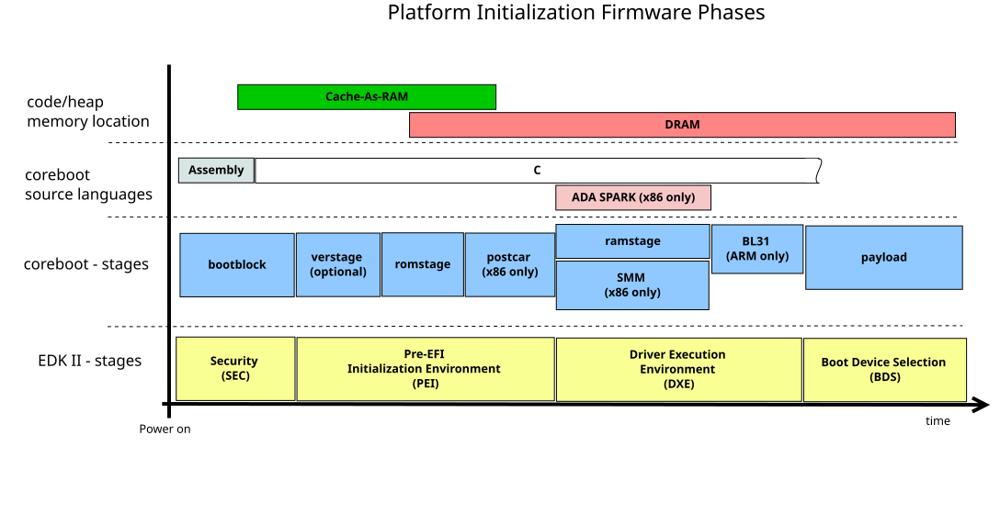

coreboot architecture
Overview

Stages
coreboot consists of multiple stages that are compiled as separate binaries and are inserted into the CBFS with custom compression. The bootblock usually doesn’t have compression while the ramstage and payload are compressed with LZMA.
Each stage loads the next stage at given address (possibly decompressing it).
Some stages are relocatable and can be placed anywhere in DRAM. Those stages are usually cached in CBMEM for faster loading times on ACPI S3 resume.
Supported stage compressions:
none
LZ4
LZMA
bootblock
The bootblock is the first stage executed after CPU reset. It is written in assembly language and its main task is to set up everything for a C-environment:
Common tasks:
Cache-As-RAM for heap and stack
Set stack pointer
Clear memory for BSS
Decompress and load the next stage
On x86 platforms that includes:
Microcode updates
Timer init
Switching from 16-bit real-mode to 32-bit protected mode
The bootblock loads the romstage or the verstage if verified boot is enabled.
Cache-As-Ram
The Cache-As-Ram, also called Non-Eviction mode, or CAR allows to use the
CPU cache like regular SRAM. This is particullary useful for high level
languages like C, which need RAM for heap and stack.
The CAR needs to be activated using vendor specific CPU instructions.
The following stages run when Cache-As-Ram is active:
bootblock
romstage
verstage
postcar
verstage
The verstage is where the root-of-trust starts. It’s assumed that it cannot be overwritten in-field (together with the public key) and it starts at the very beginning of the boot process. The verstage installs a hook to verify a file before it’s loaded from CBFS or a partition before it’s accessed.
The verified boot mechanism allows trusted in-field firmware updates combined with a fail-safe recovery mode.
romstage
The romstage initializes the DRAM and prepares everything for device init.
Common tasks:
Early device init
DRAM init
postcar
To leave the CAR setup and run code from regular DRAM the postcar-stage tears down CAR and loads the ramstage. Compared to other stages it’s minimal in size.
ramstage
The ramstage does the main device init:
PCI device init
On-chip device init
TPM init (if not done by verstage)
Graphics init (optional)
CPU init (like set up SMM)
After initialization tables are written to inform the payload or operating system about the current hardware existence and state. That includes:
ACPI tables (x86 specific)
SMBIOS tables (x86 specific)
coreboot tables
devicetree updates (ARM specific)
It also does hardware and firmware lockdown:
Write-protection of boot media
Lock security related registers
Lock SMM mode (x86 specific)
payload
The payload is the software that is run after coreboot is done. It resides in the CBFS and there’s no possibility to choose it at runtime.
For more details have a look at payloads.